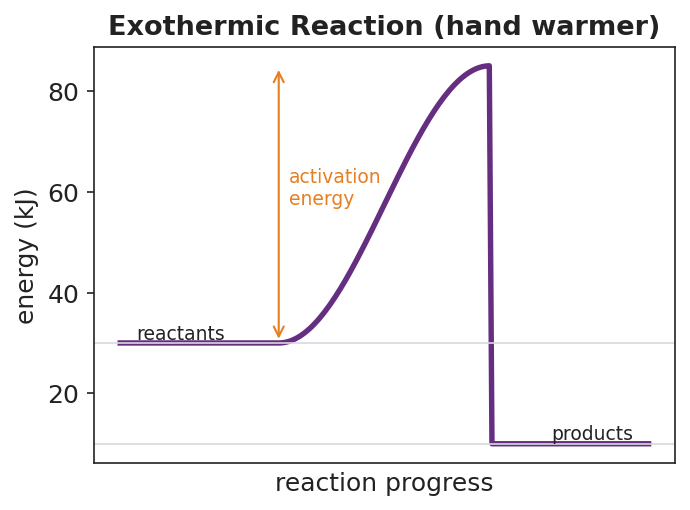
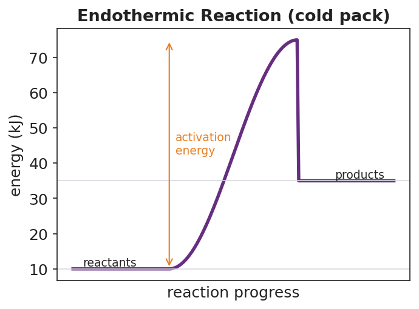

01 Phenomenon
Two sealed plastic pouches sit on the table. The first is a hand warmer — snap it, knead it, and it stays warm enough to hold for hours. The second is an instant cold pack — squeeze the inner pouch, shake it, and it turns cold enough to ice a sprained ankle. Both are activated by the same squeeze. Neither is plugged in. Neither has a flame. Yet one heats your hand and one chills it.
02 Driving question
Where does the heat come from in a hand warmer, and where does it go in a cold pack, if nothing is plugged in and there is no flame?
03 Notice & wonder
| I notice… | I wonder… |
|---|---|
Turn & Talk #1: Both pouches were activated by the same squeeze, but one warms your hand and one cools it. There is no plug and no flame. In one sentence, where do you think the energy is actually coming from — and going to?
04 Initial model
You will dissolve two salts in water at the stations. For each beaker, draw a simple before-and-after sketch. Show the chemicals, the water, and an arrow for which way heat moved: out of the chemicals into the water, or out of the water into the chemicals.
Beaker A — CaCl₂ (calcium chloride):
(sketch space — show heat-flow arrow) _______________________________________________ _______________________________________________
Beaker B — NH₄NO₃ (ammonium nitrate):
(sketch space — show heat-flow arrow) _______________________________________________ _______________________________________________
Which beaker matches the hand warmer? _______________
Which beaker matches the instant cold pack? _______________
In both beakers, energy was never created or destroyed — it only moved. Where did it move between? _______________________________________________
05 Investigate
Part 1 — ABCs: Predict, then collect temperature data
Before adding anything, predict what each salt will do to the water temperature, and why.
| Beaker | Salt | My prediction (up / down / same) | My reason |
|---|---|---|---|
| A | CaCl₂ | ||
| B | NH₄NO₃ |
Now add each salt, stir, and read the thermometer. Record the data.
| Beaker | Salt | Start temp (°C) | End temp (°C) | Went up or down? |
|---|---|---|---|---|
| A | CaCl₂ | |||
| B | NH₄NO₃ |
Which beaker released heat to the water (water got warmer)? _______________
Which beaker absorbed heat from the water (water got colder)? _______________
Part 2 — Bond breaking vs. bond forming
The rule: breaking bonds absorbs energy; forming bonds releases energy. Whether a reaction warms or cools its surroundings depends on which total is larger.
Work through the burning of hydrogen with your group:
2 H₂ + O₂ → 2 H₂O
Bond energies (kJ per mole of bonds): H–H = 436, O=O = 498, O–H = 463.
| Step | Bonds involved | Energy (kJ) | Absorbs or releases? |
|---|---|---|---|
| Break reactant bonds | 2 (H–H) + 1 (O=O) = 2(436) + 498 = ____ | ||
| Form product bonds | 4 (O–H) = 4(463) = ____ | ||
| Net change | released − absorbed = ____ − ____ = ____ | exo- or endo-? |
Did forming the product bonds release more energy than breaking the reactant bonds absorbed? _______________
Is this reaction exothermic or endothermic? _______________
Part 3 — Reading the reaction-coordinate diagrams
Look at the two figures your teacher is projecting:


In the exothermic (hand warmer) diagram, are the products higher or lower than the reactants? _______________
In the endothermic (cold pack) diagram, are the products higher or lower than the reactants? _______________
Both diagrams have a hump in the middle. What does that hump represent? _______________________________________________
Which diagram matches your CaCl₂ beaker? _______________ Which matches your NH₄NO₃ beaker? _______________
06 Make it make sense
For each reaction below, complete the bond-energy bookkeeping, find the net energy change, and classify the reaction. These are the same kinds of calculations you practiced in the Investigation — confirm your method here.
1. Burning hydrogen: 2 H₂ + O₂ → 2 H₂O (H–H = 436, O=O = 498, O–H = 463 kJ)
| Step | Calculation | Energy (kJ) |
|---|---|---|
| Energy absorbed (break reactant bonds) | 2(436) + 498 = | |
| Energy released (form product bonds) | 4(463) = | |
| Net change (released − absorbed) |
- Exothermic or endothermic? _______________
- Does it warm or cool its surroundings? _______________
2. A reaction where breaking bonds absorbs 600 kJ and forming bonds releases 450 kJ.
- Net change (released − absorbed): ____ − ____ = ____ kJ
- Exothermic or endothermic? _______________
- Which way does heat flow — into or out of the system? _______________
3. On the axes below, sketch a reaction-coordinate diagram for an exothermic reaction. Label the reactants, the products, and the activation energy. Draw an arrow showing which way heat flows relative to the surroundings.
(sketch space) _______________________________________________ _______________________________________________
07 Key vocabulary
- exothermic reaction
- a reaction that *releases* energy to its surroundings; the products store less energy than the reactants (products drawn below reactants on a reaction-coordinate diagram), so heat flows *out* of the system and the surroundings warm up (e.g., a hand warmer)
- endothermic reaction
- a reaction that *absorbs* energy from its surroundings; the products store more energy than the reactants (products drawn above reactants on a reaction-coordinate diagram), so heat flows *into* the system and the surroundings cool down (e.g., an instant cold pack)
- activation energy
- the minimum energy that must be supplied to *start* a reaction (the height of the hump on a reaction-coordinate diagram); it is present in both exothermic and endothermic reactions, which is why even an exothermic hand warmer must be snapped to begin
Use each term in a sentence about today’s investigation. Do not copy the definition — describe something you actually did or observed.
exothermic reaction: _______________________________________________ _______________________________________________
endothermic reaction: _______________________________________________ _______________________________________________
activation energy: _______________________________________________ _______________________________________________
08 Revise your model
Return to your Initial Model (the heat-flow sketches for beakers A and B). Add vocabulary labels:
Label beaker A as ___________ and beaker B as ___________ (exothermic / endothermic).
On each sketch, write whether heat flows into or out of the system.
Write a revised appositive sentence for the cold pack:
An endothermic reaction — _________________________ — leaves the products _______________ than the reactants on the diagram.
Then finish this Because / But / So sentence:
When you squeeze an instant cold pack, your hand gets cold because __________________________________________, but __________________________________________, so __________________________________________.
09 Exit ticket
(a) For the combustion of methane, breaking the reactant bonds absorbs 2658 kJ and forming the product bonds releases 3466 kJ.
- Net energy change (released − absorbed): ____ − ____ = ____ kJ
- Is the reaction exothermic or endothermic? _______________
- Does it warm or cool its surroundings? _______________
(b) On the axes below, the products are drawn below the reactants. Label the reactants, the products, and the activation energy. Then state: is this reaction exothermic or endothermic?
(diagram space — products below reactants)
Exothermic or endothermic? _______________
(c) In one sentence, explain — using the words bond breaking and bond forming — why this kind of reaction releases heat to its surroundings.
10 Explore further
- Hot/cold pack investigation: At stations, students record the starting temperature of two beakers of water, then dissolve a small measured amount of two salts — calcium chloride (CaCl₂, the exothermic salt used in commercial hand warmers/de-icers) and ammonium nitrate (NH₄NO₃, the endothermic salt used in instant cold packs) — one in each beaker, stirring and reading the thermometer every 30 seconds. The CaCl₂ beaker warms; the NH₄NO₃ beaker cools. Students classify each as exothermic or endothermic *from the temperature data they collected*, before any vocabulary is named. (Safety: small quantities, goggles and aprons on, no ingestion; CaCl₂ solution gets warm — handle the beaker by the rim.)
- Bond-energy diagram construction: Using `figures/exothermic_energy_diagram.png` and `figures/endothermic_energy_diagram.png` as models, students draw a reaction-coordinate diagram for each of their two beakers — placing reactants and products at the correct relative heights, drawing the activation-energy hump, and adding an arrow showing whether energy leaves the system (to the surroundings) or enters it. For a digital option, a Javalab "energy of reaction" or PhET "Energy Forms and Changes" simulation can precede or follow the hands-on stations.